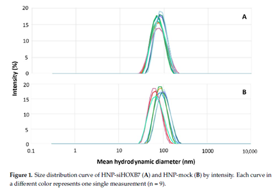
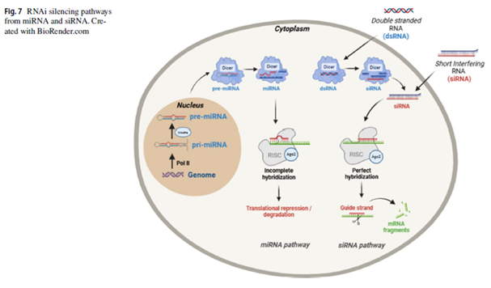
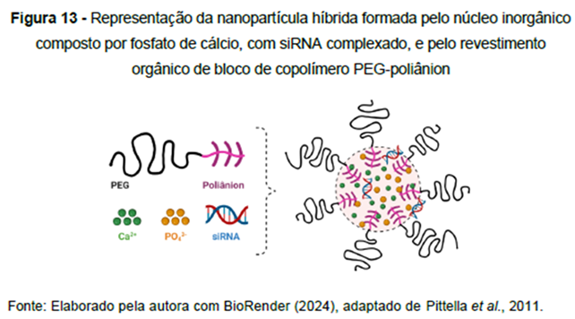
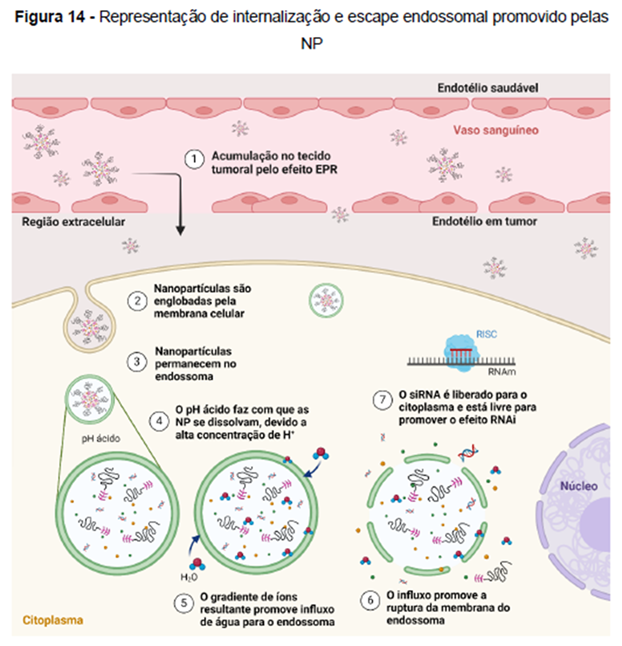

Construção de software siRNASeeker, baseado no Guia de Design de moléculas de siRNA do laboratório LDNano, coordenado por Frederico Pittella. O produto foi desenvolvido pela parceria entre Matheus Gomes (UFU) e Frederico Pittella (UFJF), e a versão Beta está incorporada ao site da Rede: nanogene.com.br.
Defesa de tese de doutorado por Ana Beatriz Caribé dos Santos Valle, em 27 de Março de 2024. Agradecimento explícito à Rede Nanogene na tese.
Prêmio “Young Scientist Travel Grant 2024” – recebido por Ana Beatriz Caribé dos Santos Valle. Melhor apresentação Oral, Controlled Release Society - CRS Brazilian Chapter, 2024.
Fotos e Ilustrações do Projeto:

Figura 1. Curva de distribuição de tamanho de HNP-siHOXB7 (A) e HNP-mock (B) por intensidade. Cada curva em uma cor diferente representa uma única medida (n = 9).

Fig.7 Vias de silenciamento de RNAi de miRNA e siRNA. Criado com BioRender.com

Figura 13 - Representação da nanopartícula híbrida formada pelo núcleo inorgânico composto por fosfato de cálcio, com siRNA complexado, e pelo revestimento orgânico de bloco de copolímero PEG-poliânion. Fonte: Elaborado pela autora com BioRender (2024), adaptado de Pittella et al., 2011.

Figura 14 - Representação de internalização e escape endossomal promovido pelas NP. Fonte: Elaborado pela autora com BioRender (2024).